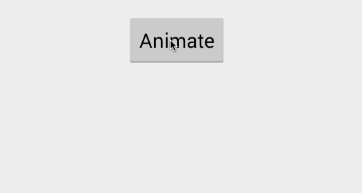
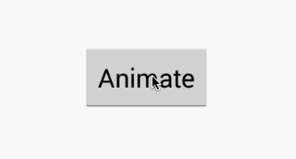
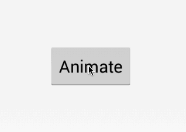
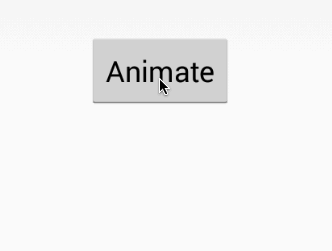
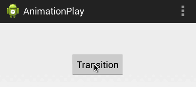
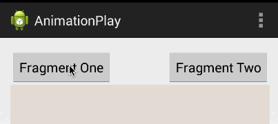
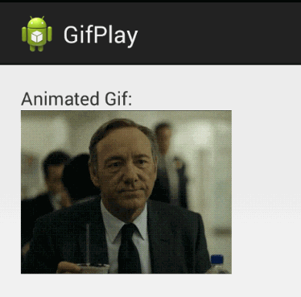
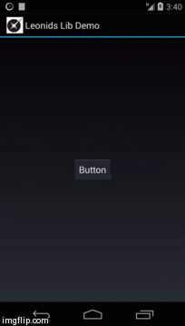

概述
Android为视图和activitys间的转场提供了强大的动画支持。应对不同场景系统提供了三种类型的动画，但是最重要的还是属性动画（Property animation）。属性动画允许我们设置任意的动画属性在动画持续期间来适配这些属性从而达到动画的效果。
这些可以应用于任何的Android应用程序，典型的可以对一个视图进行位置上的，旋转性、膨胀性，和颜色上进行动画效果的展示。
原文地址：http://guides.codepath.com/android/Animations
该文档涉及到谷歌官方文档所以在阅读的时候需要梯子查阅。
动画类型
Android中实际上是有两个明确的动画框架：
- Property Animations – 从Android3.0开始引入的很强大也很灵活的框架
- View Animations – 比较慢且不够灵活，自从Property动画引入后官方就弃用了这个方法
依靠这个强大的框架，可以进一步将动画分为以下5种类型：
- Property Animations – 这是一个在两个视图间依靠不同属性进行动画，经常使用它对图片进行旋转对按钮淡入淡出等等。
- Activity Transitions – Activity之间的转场动画
- Fragment Transitions – Fragment之间的转场动画
- Layout Animation – 该类型可以使我们对布局容器或者ViewGroup如ListView产生动画效果。有了Layout Animation可以使容器中的所有视图都能产生动画效果。
- Drawable Animations – 该类型是使用Drawable来产生动画效果。
Material动画原则
随着5.0版本的发布，谷歌公司也发布了更详细的动画文档，该文档提供了Material设计原则，下面是核心的4条原则：
- Authentic motion – Material设计的世界里不仅要求设计的漂亮，也要综合考虑应用的空间、关系、功能以及系统意图来进行构建应用。
- Responsive interaction – 如果一款应用的用户交互做的足够完美业务逻辑合乎用户审美，那么用户会对这款应用感到满意甚至是欣喜。
- Meaningful transitions – 精心设计的应用会引起用户注意，通过多步骤的操作使用户感到应用思路清晰而不至于混淆某个按钮的意义或者某个键的功能等等。
- Delightful details – 从应用组件细节入手，如图标的转场变化，所有这些细节都会提升用户体验。
读者可以从这四条原则角度出发仔细的分析一款Material应用。
属性动画
属性动画是3.0版本的新特性，引入这一特性的首要动机可以查阅Android官方博客。
视图上的普通动画属性如下表所示：
| Property | 描述 |
|---|---|
| alpha | 透明度 |
| rotation、rotationX、rotationY | 旋转 |
| scaleX、scaleY | 伸缩 |
| x、y、z | 位置 |
| transitionX、transitionY、transitionZ（API21+） | 从位置上偏移 |
为兼容3.0之前的设备可以使用NineOldAndroid来实现所有的属性动画。如果你是一个studio用户可以在gradle文件中添加下面这句话：
AndroidViewAnimations这个库使得使用属性动画更简单。
在java中使用ObjectAnimator对象
我们一旦引入了NineOldAndroid，就可以使用ObjectAnimator类来实现动画效果了。
这两行代码可以使空间产生变淡的效果。注意alpha是一个string类型的参数ObjectAnimator依赖反射和使用setAlpha)、getAlpha)方法来执行动画效果。

我们也可以使用android4.0 graphics andanimations来执行属性动画：
这种方式会提升运行速度，因为该方法不会使用反射机制，属性包括了ALPHA, ROTATION, ROTATION_X, ROTATION_Y, SCALE_X, SCALE_Y, TRANSLATION_X, TRANSLATION_Y, TRANSLATION_Z, X, Y, Z来提升运行效率。
为Animator对象设置duration和repeat属性
上面的代码产生一个20%不透明的效果，我们也可以添加额外的动作，例如duration、repeat等：
设置插值器（interpolation）
每当我们设置一个属性动画时都要考虑动画运行的速度。换句话说，我们不仅要考虑属性变化也要控制动画运动的轨迹，这样需要为ObjectAnimator制定一个TimeInterpolator对象：
其效果如下：

API中interpolator实现定义了一些属性，常用的如下表所示：
| Name | 描述 |
|---|---|
| AccelerateInterpolator | 加速 |
| BounceInterpolator | 跳跃 |
| DecelerateInterpolator | 减速 |
| LinearInterpolator | 线性 |
除此之外还有很多其他的时间插值器check
监听动画的生命周期
我们可以添加AnimatorListenerAdapter来管理动画期间的事件例如onAnimationStart 或 onAnimationEnd:
Choreographing Animations
我们可以使用多个ObjectAnimator对象通过AnimatorSet类执行复杂的动画效果：
其效果如下：

也可以在AnimatorSet中组织多个AnimatorSet一起进行动画：
下面是另外一个精心设计过的动画效果
在java中使用ViewPropertyAnimator对象
我们可以通过ViewPropertyAnimator更简便的使用属性动画，ViewPropertyAnimator对象是ObjectAnimator对象的最顶层动画效果的属性。该类的执行效率也很高，具体信息可以查阅Android官方博客
为了兼容3.0之前的版本需要适配NineOldAndroid库，下面代码可以并发执行动画：
为了使任何一个Activity都能使用NineOldAndroid，要确保静态导入ViewPropertyAnimator类：
下面我可以在自己的View上执行属性动画了，例如淡化一个按钮:
这样，自动创建和执行动画：

ViewPropertyAnimator类提供了很多属性如不透明，旋转，伸缩，x&y，位置等等。例如下面是一个比较复杂的动画效果：
|
|
使用XML
我们也能在XML中使用NineOldAndroid的动画，在XML中描述我们要动画的效果，例如，我们想要淡化一个按钮，可以添加res/animator/fade_out.xml文件：
接着在Activity中加载XML文件并执行：
就这些东西了，现在执行我们预先定义好的XML动画，下面是更复杂的动画res/animator/multi.xml。该文件中定义的动画可以并行的运用到一个按钮的动画上。
|
|
效果如下：

更多信息查阅官方文档和Animator Resource
使用ValueAnimator对象来自定义动画
在一些情况下，通过替换动画属性例如上面讲到的alpha来实现动画效果的过程我们可能需要有更好的粒度来控制动画的。这种情况下可以使用ValueAnimator来自定义监听来适应View的动画：
更多信息查阅ValueAnimator。注意，大多数情况我们可以使用上文中展示的ObjectAnimator类来实现，但是对于比较低端的动画，我们没必要直接使用属性动画。
View Animations
视图动画是在属性动画提出前就有了，它的运行速度比较慢且不够灵活。所以3.0之后的设备都被属性动画所取代，这里简单的看一下老版本上使用XML解析的视图动画的原理。
首先，通过Android官方博客给出属性动画引入动机，和属性动画不同视图动画具有以下特点：
- 老版本的试图动画只支持移动、淡入淡出、伸缩、旋转。然而新版本的提供了更强大框架（例如背景颜色、梯度、甚至在地图上做标记的动画）
- 老版本只支持View对象（如button，listview，TextView等）但是新的属性动画能支持任意的对象例如Drawable。
- 老版本的动画当经历了一个移动的动画后不会更新当下的位置，而需要手动添加代码来更新位置。这个问题在新版本中已经修复。
查阅Google I/O talk上对老版本动画的讨论。
老版本的视图动画也存在着错误的想法，那就是不适用硬件（GPU）来驱动动画。这个问题被谷歌工程师们揭穿，当属性动画在3.0版本发布后，动画硬件加速的支持也被添加进去，这样使得动画表现更加出色。
使用XML
通过定义我们视图动画的XML文件来替代属性动画的XML。首先，我们在res/anim目录下定义我们的动画，你也可以通过这个链接看到很多流行的动画。
下面res/anim/fade_out.xml例子是一个淡化的动画效果：
在Activity为视图加载这个动画：
其效果如下：
更多信息查看Animation Resource和这篇博文
Activity Transitions
除了属性动画，我们也可以通过Activity来管理动画和转场，我们通过Intent触发一个转场动画。基本方法是通过startActivity传递Intent来调用overPaddingTransition)方法：
第一个参数是enter的动画，第二个参数是exit的动画效果，具体的动画可以通过XML文件定义：更多效果
下面是enter的动画XML，res/anim/right_in.xml
上述代码将延X轴从屏幕的右侧滑入（100%p的意思是，将要启动的Activity的位置与屏幕的宽相等<也就是屏幕最右侧滑入>），接下来我们定义res/anim/left_out.xml文件：
这几行代码将导致旧的Activity从屏幕左侧滑出。当这些动画一起执行时，将产生旧Activity从左侧滑出新Activity从右侧滑入的效果。为了控制返回键也产生相反的动画效果需要创建left_in.xml和right_out.xml文件。
left_in.xml:
right_out.xml:
接下来我们使用overridePendingTransition方法来驱动这个动画：
其效果如下：

你也可以看到一些复杂转场的例子，具体如下：
- Card Flip Animation
- Vine Activity Transition
- Sliding In From Left Animation
- Sliding Drawer Animation
查阅上述的动画来更深的理解动画原理和自定义一个唯一的动画。Android5.0以上对转场又新添加了共享元素转场，check
Fragment Transition
和Activity转场类似我们可以在Fragment中通过FragmentTransition类中调用setCustomAnimations方法实现转场。动画可以简单的通过XML文件设置就和前文提到的一样，例如，我们要实现Fragment右进左出的效果，首先需要自定义res/anim/slide_in_left.xml文件
接着，res/anim/slide_out_right.xml文件
现在我们需要配置Fragment的转场，在replace方法之前配置好，具体如下：
其效果如下：

在兼容性上需要注意，要是在Fragment上使用转场不应该使用support Fragment，具体详情移步stackOverflow
注意Android内置了一些动画XMl，R.anim可以通过android.R.anim来引用：
更多关于Fragment转场可以查看这篇文章，也可以阅读一下animation的源码
官方的Fragment flip教程教你一步一步实现flip的动画效果。
扩展须知，如果你将动画运用到DialogFragment上可以查看这篇StackOverflow
Layout Animations
开始时的动画
当一个布局第一次绘制在屏幕上时候可以为其指定动画效果。可以在布局文件中设置android:layoutAnimation属性来指定动画
首先，定义动画res/anim/slide_right.xml，一个往右滑动的动画
接下来需要创建特定的layoutAnimation来引用动画文件
最后将layoutAnimation放置到布局文件中：
现在，当你启动应用时，布局中的视图将从屏幕右侧滑入。更多关于布局动画的信息查看linkyan的博文或者这篇布局动画教程和ui Action 教程
动画变化
Layout Change Animation运行我们使用任意的布局或者ViewGroup如ListView都能使用动画。有了布局动画的enable，所有在布局容器中的视图都将自动产生动画效果。这个对ListView尤为重要因为可以使得每一个item的添加和删除产生动画效果。
为了使默认的动画可用，我们要在ViewGroup中设置animateLayoutChanges属性：
android:animateLayoutChanges使得默认动画可用。
动图（.gif）
在很多需求中我们会看到显示动态图的要求，最简单就是GIF格式的图片。底层可以调用AnimationDrawable的XML文件来描述这个动图的每一帧的序列，来实现动态图的展示效果。
最简单的方法来显示GIF图就是使用第三方库，Glide是一个显示本地或者远程的gif图的库。该库是扩展了ImageView类，首先在gradle文件中依赖该库：
接着设置ImageView，例如在activity_main.xml文件中：
对于本地的GIF图片可以放置在res/raw目录下，接下来转化和加载GIF图片：
其效果如下：

你也可以使用其他优秀的库来实现动态图的展示，例如android-gif-drawable,当然也可以使用WebView来加载动图。
Lollipop 动画
在5.0版本中有许多新的动画特性被引入：
- Shared Element Activity Transition – 共享元素转场
- Ripple Animation – 波纹动画效果
- Circular Reveal Animation - Reveal is a new animation introduced in Android L that animates the view’s clipping boundaries. Often used in conjunction with material floating action buttons.
这些特性只能运行在5.0及其以上的设备中。
颗粒效果（Particle Effect）
使用第三方库Leonids可以实现如下图所示的颗粒效果的动画。颗粒效果常常被运用在游戏中，如火焰或者烟雾的效果，当然这种效果也可以运用在普通的应用中，如小米MIUIV6系统Launcher卸载应用的效果。

由于它主要是运用在游戏中，所以所有的游戏引擎也都支持了颗粒系统了，但是依旧没有构建在标准的android UI系统中。更多关于颗粒效果的动画移步该库的官方博客。
库
- AndroidViewAnimations – Common property animations made easy.
- ListViewAnimations – List view item animations made simple including insertion and deletion.
- NineOldAndroids – Compatibility library supporting property animations all the way back to Android 1.0.
- Leonids – Simple particle effects for Android.
参考
- http://www.vogella.com/articles/AndroidAnimation/article.html
- http://developer.android.com/guide/topics/graphics/overview.html
- http://developer.android.com/guide/topics/graphics/drawable-animation.html
- http://developer.android.com/guide/topics/resources/animation-resource.html
- http://developer.android.com/reference/android/view/ViewPropertyAnimator.html
- http://www.androidhive.info/2013/06/android-working-with-xml-animations/
- http://karanbalkar.com/2013/05/tutorial-30-create-animation-in-android/
- http://www.javacodegeeks.com/2011/01/android-animations-quick-guide.html
- http://android-developers.blogspot.com/2011/02/animation-in-honeycomb.html
- http://android-developers.blogspot.com/2011/05/introducing-viewpropertyanimator.html
- http://learnandroideasily.blogspot.in/2013/07/imageview-animation-in-android.html
- http://java.dzone.com/articles/using-view-animations-android
- http://mobile.dzone.com/articles/android-ui-action-layout
- http://www.google.com/design/spec/animation/authentic-motion.html